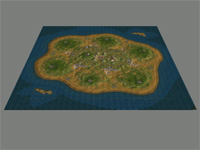
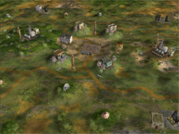
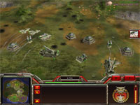
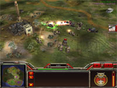
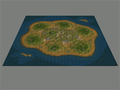
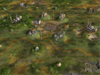
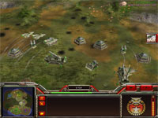
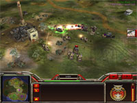

   
   Download this map for Generals Zero Hour or Generals
Minken: "This map is
great - a classic already!"
Another 6-player map. Made a lot of changes to the skirmish AI on this map before
adding trees and sounds, etc. As a result this should be a really good skirmish
map - it offers quite a challange!
Updated 03-06-28: Decreased the value of the money crates and replaced the oil
derricks with black markets on the small islands to prevent AI-players from
lagging the game.
A large island with a central platuae. Desert/meadow textures... quite a mix. Two smaller islands in the sea.
One supply dock per base area. Extra supply docks between the starting positions. Oil derricks and oil refineries on the central plateau. Some smaller supply piles around the oil derricks, and a supply dock in the center of the plateau. The small islands in the sea offers some extra goodies. Only USA or GLA troops will be able to catch them though.
Will kick your @$$!